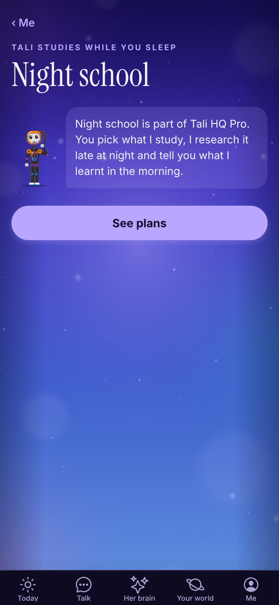
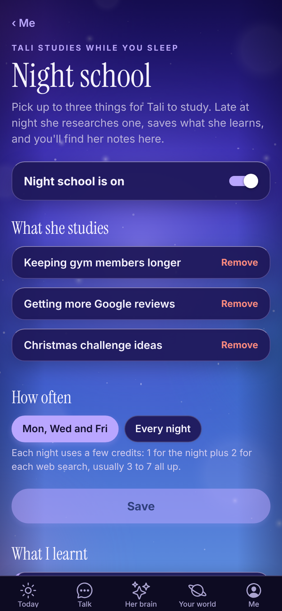
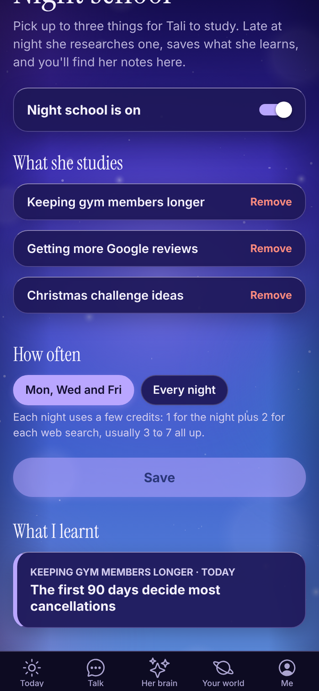
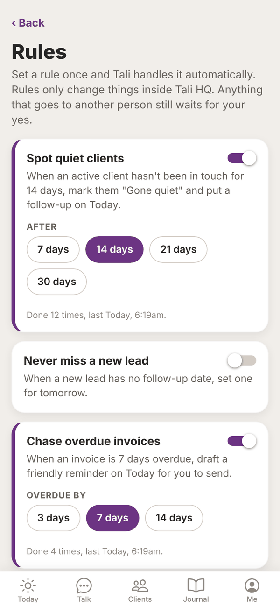
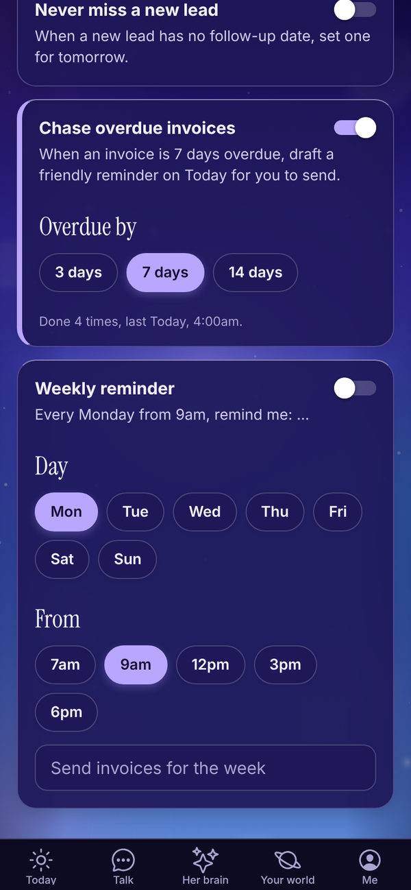

Tali HQ guide
Night school and Rules
Pick what Tali studies each night, and set rules for the jobs she handles on her own inside Tali HQ.
Night school and Rules are part of Pro. With Night school, Tali studies topics you pick late at night and turns up sharper on your industry in the morning. With Rules, you set something once, like spotting quiet clients, and she handles it automatically. Pro
On Free and Tali HQ, both screens explain what they do, with See plans. In the Me menu they show a PRO tag.

Night school Pro#
Open Me, Night school. On Pro you can also get there from the Tali's side of Journal.


Set it up#
- Make sure the switch says Night school is on.
- Under What she studies, type a topic, for example "Instagram ideas for cafes", and tap Add topic. With no topics yet, you can tap an idea instead: Pricing my services, Getting more Google reviews, Instagram for my business, Keeping clients longer or Small business tax basics.
- Add up to three topics. To swap one, tap Remove first.
- Under How often, pick Mon, Wed and Fri or Every night.
- Tap Save. You see "Saved. I'll hit the books tonight."
What happens at night#
Between 11pm and 3am your time, on the nights you picked, Tali takes the next topic in turn, researches it on the web, and saves what she learnt to her memory of you. In the morning, a note is waiting under What I learnt.
Tap a note to read it: the headline, what she learnt as a numbered list, and Where I read it with links to her sources. What she learns shows on the Me screen as Lesson memories, and she uses it in chats and briefs.
Each night uses 1 credit, plus 2 for each web search. Usually 3 to 7 credits a night. If you're out of credits, she skips the night.
To pause it, turn the switch to Night school is off and tap Save.
Rules Pro#
Open Me, Rules.


Rules only change things inside Tali HQ. Anything that goes to another person still waits for your yes on Today.
| Rule | What it does | Setting |
|---|---|---|
| Spot quiet clients | When an active client hasn't been in touch for a number of days, marks them "Gone quiet" and puts a follow-up on Today. | After 7, 14, 21 or 30 days |
| Never miss a new lead | When a new lead has no follow-up date, sets one for tomorrow. | None |
| Chase overdue invoices | When an invoice is overdue by a number of days, drafts a friendly reminder on Today for you to send. | Overdue by 3, 7 or 14 days |
| Weekly reminder | Every week on the day you pick, from the time you pick, adds a reminder with your words. | Day, From (7am, 9am, 12pm, 3pm or 6pm) and the reminder text |
Turn a rule on#
- Flip the switch on the rule's card.
- Pick its setting, if it has one. For a weekly reminder, type what it should say, for example "Send invoices for the week".
- If you changed a setting, tap Turn on (or Save changes on a rule that's already on).
Each card shows how many times the rule has run and when it last did, like "Done 12 times, last Today, 6:19am". Rules check about once an hour.
To stop a rule, flip its switch off. To remove it altogether, switch it off, tap Remove under the card, then Sure?.
Rules use no credits.
Questions#
Is Night school part of the free trial?
No. The trial is a trial of Tali HQ. Night school and Rules are Pro only.
Can I pick what time Night school runs?
No. It runs late at night, between 11pm and 3am your time, on the nights you choose.
Will a rule ever message my clients?
No. Rules only change things inside Tali HQ, like a client's status or a follow-up date. The overdue invoice rule drafts a reminder, and you send it from Today.
Why didn't my weekly reminder show up?
It needs reminder text. Type what it should say, then tap Save changes. It runs once a week, on or after the time you picked.
Can I add my own kind of rule?
Not yet. The four rules above are the ones available.